Woodpecker Ranch is an idyllic wedding venue that is steeped in history and natural beauty. Its roots can be traced back to 1874 when it was homesteaded, and since then it has been a cherished landmark in the area. The property spans almost 16 acres, and its picturesque landscape of hills, boulders, and Heritage Oak trees provides a stunning backdrop for any wedding celebration. The main residence and accompanying structures exude rustic charm and elegance, making it an ideal choice for couples seeking a unique and unforgettable wedding experience. Such properties are rare and hard to come by, making Woodpecker Ranch a once-in-a-generation find.
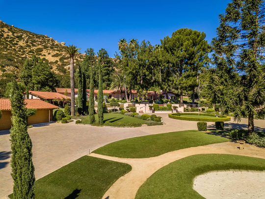
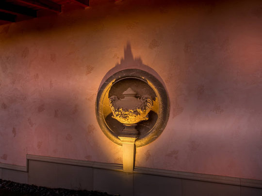
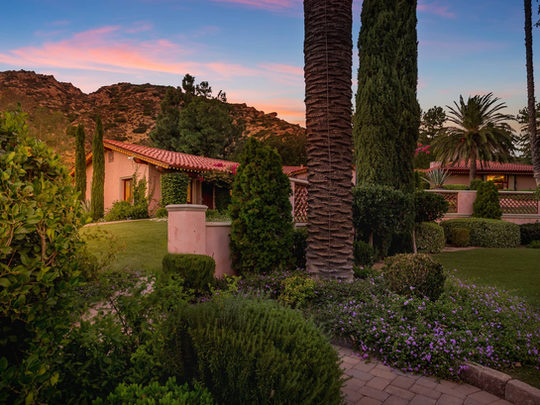
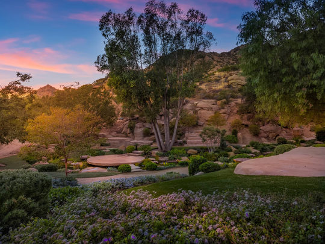
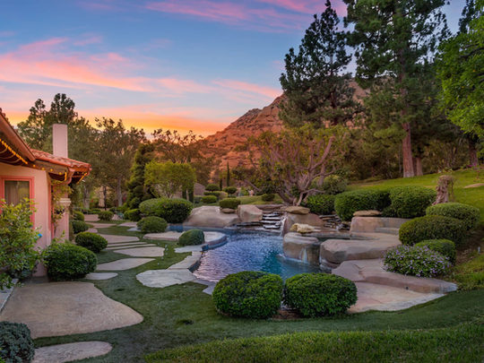
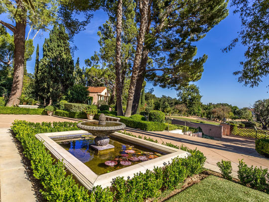
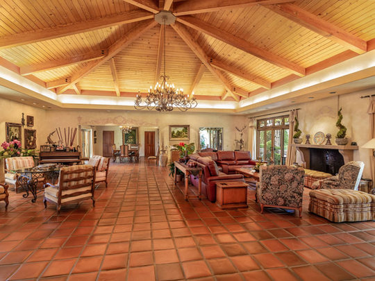
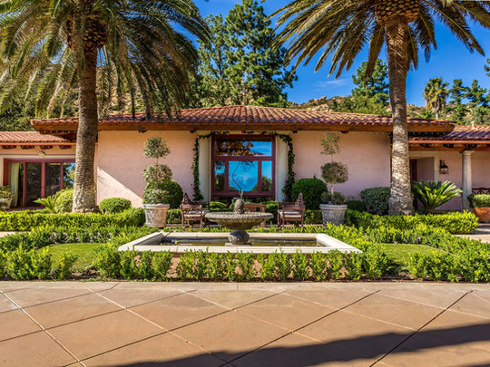
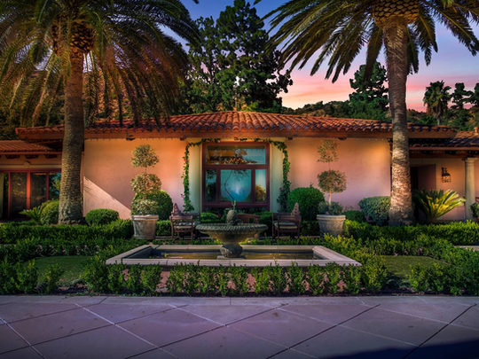
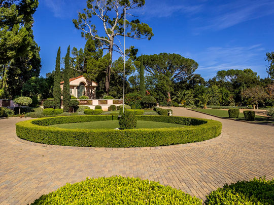
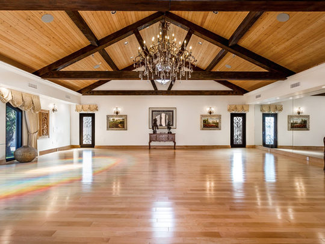
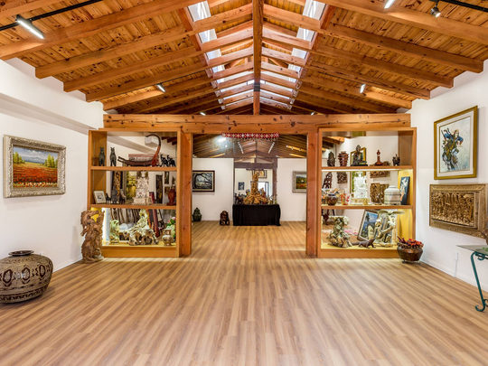
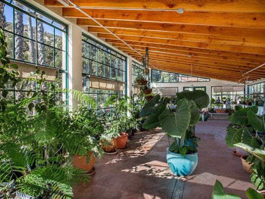
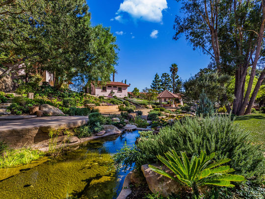
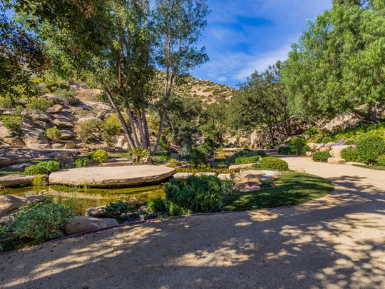
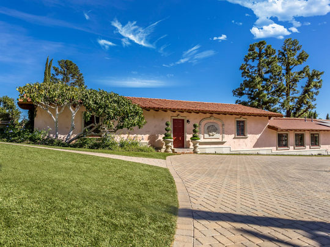
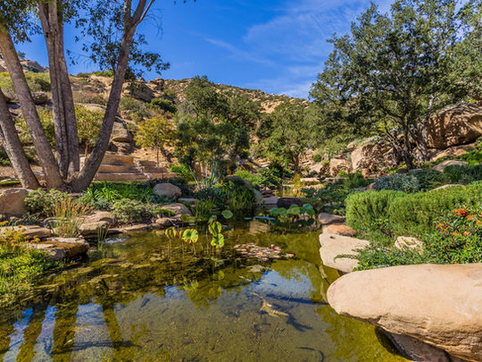
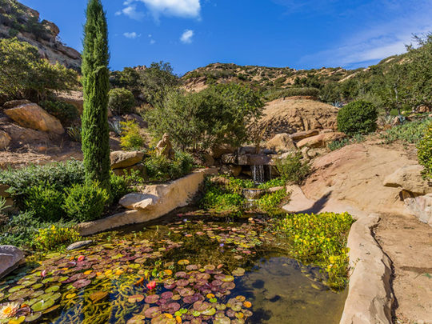
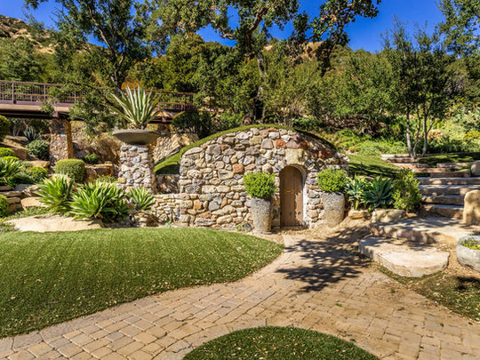
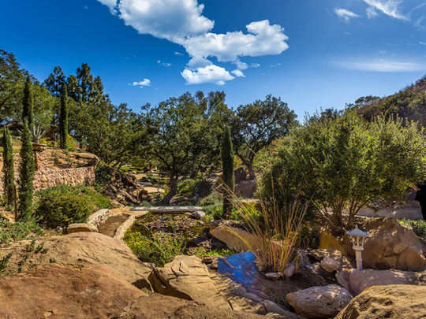
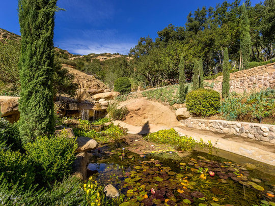
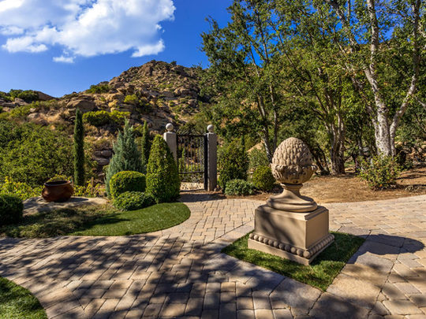
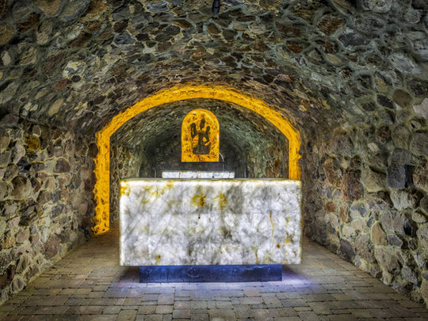
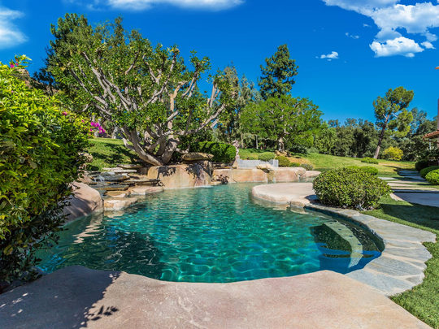
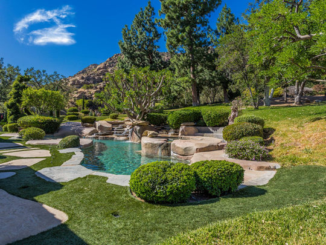
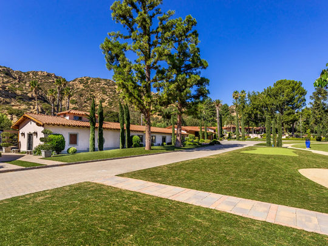
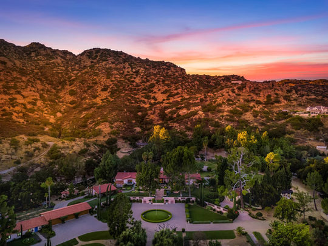
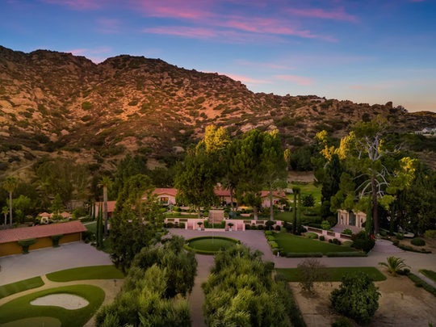
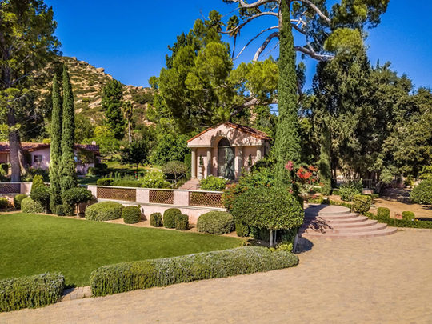
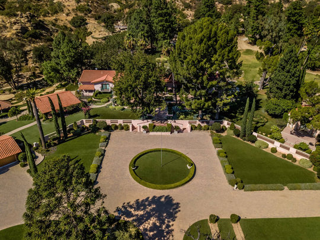
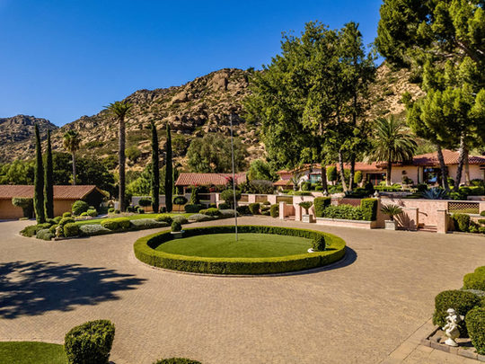
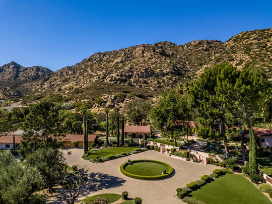
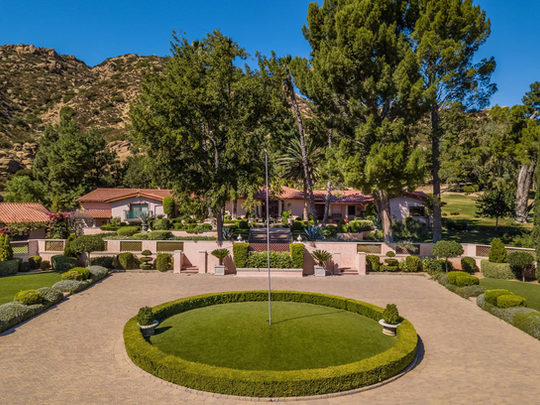
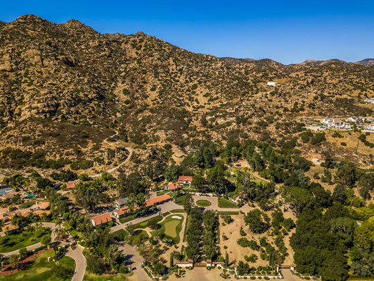
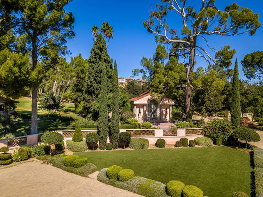
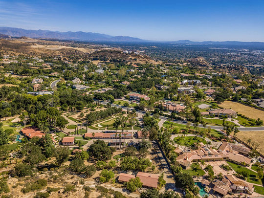
Find your way around
Hover over a pin to learn more
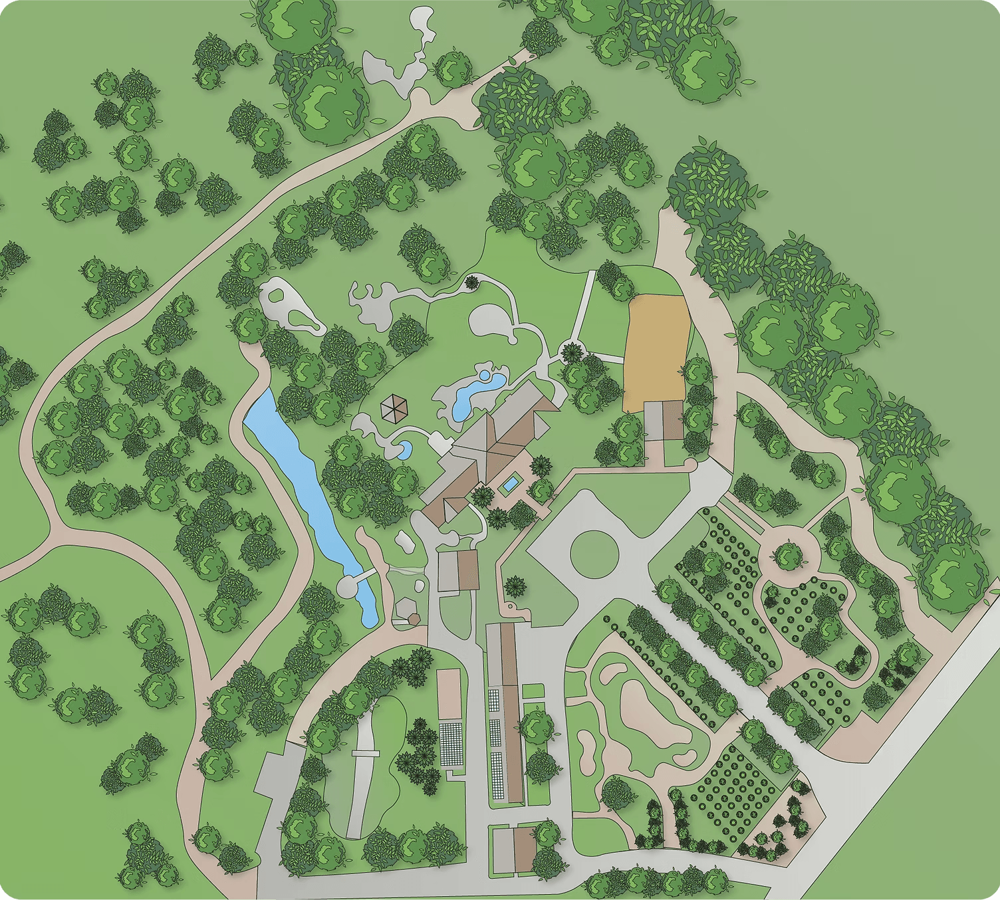